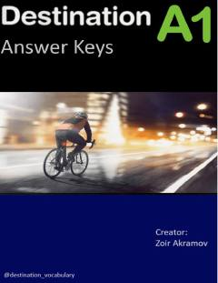

DADestination A1 darsligi uchun mo'ljallangan rasmiy javoblar va kalitlar to'plami.
Ushbu kitob Malcolm Mann va Steve Taylore-Knowles tomonidan yozilgan Destination A1 darsligidagi mashqlar uchun javoblar to'plamidir. Muallif Zoir Akramov tomonidan tuzilgan ushbu qo'llanma ingliz tili o'rganuvchilariga o'z bilimlarini mustaqil tekshirish va baholash imkonini beradi.